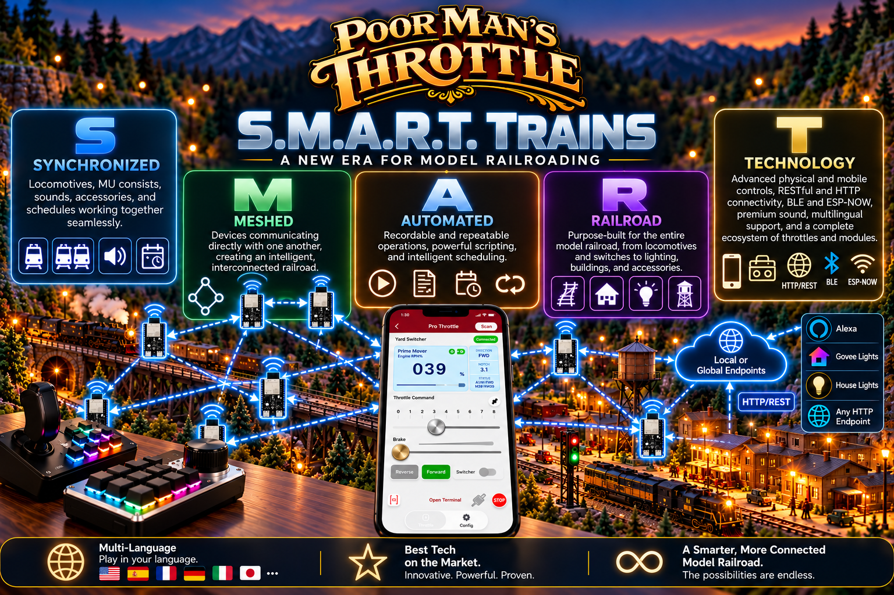

S
Synchronized
Locomotives, MU consists, sounds, accessories, and schedules working together seamlessly.
Introducing S.M.A.R.T. Trains - Synchronized Meshed Automated Railroad Technology by Poor Man’s Throttle — a new category of model railroad technology. Your railroad is not just controlled anymore. It is connected. It is intelligent. It is S.M.A.R.T.

Start here for getting started guides, hardware information, features, setup help, and the rest of the Poor Man’s Throttle documentation.
Open the PMT Information HubThis is not just another wireless throttle. It is a complete ecosystem where locomotives, physical throttles, mobile devices, switches, lights, sounds, buildings, and accessories do not just respond to commands — they can work together.
Every letter represents a core part of the PMT vision, and together they define a new kind of railroad system.
Locomotives, MU consists, sounds, accessories, and schedules working together seamlessly.
Devices communicating directly with one another, creating an intelligent, interconnected railroad.
Recordable and repeatable operations, powerful scripting, and intelligent scheduling.
Purpose-built for the entire model railroad, from locomotives and switches to lighting, buildings, and accessories.
Advanced physical and mobile controls, RESTful and HTTP connectivity, premium sound, multilingual support, and a complete ecosystem of throttles and modules.
PMT is bringing together capabilities that normally live in separate products and making them part of one connected railroad experience.
Locomotives, MU consists, sound, accessories, and schedules can all work in concert so your railroad feels coordinated instead of fragmented.
PMT devices can communicate directly with each other, which means one action on the layout can trigger reactions elsewhere without everything depending on one narrow path.
Automation recording, repeatable operations, scripting, and scheduling all help you move from manual control to more intelligent layout behavior.
Switches, lighting, buildings, accessories, and locomotive control all belong to the same system, so the whole layout can be designed as one experience.
S.M.A.R.T. Trains pull together an unusually broad set of features into one DIY-friendly ecosystem.
Communicate with local or internet services, smart-home systems, and compatible HTTP endpoints.
All devices know about and can communicate with one another across the PMT ecosystem.
Record, replay, script, and schedule layout operations with increasing sophistication.
Operate from phones, tablets, or physical controls depending on what feels best for your railroad.
Automated and manual sounds help bring locomotives and scenes to life with higher realism.
Powerful MU consisting helps multiple locomotives run together more smoothly and effectively.
An expanding family of throttles and modules keeps broadening what PMT can do around the layout.
Play in your language and make the system more approachable for hobbyists across the globe.
Innovative, powerful, and proven features continue to push PMT beyond what many expect from a DIY system.
The possibilities expand dramatically when your railroad is not only controlled, but truly connected and intelligent.
S.M.A.R.T. Trains are built for the whole model railroad, not just one corner of it.
Coordinate power, sound, and operation across single locomotives or multi-unit consists.
Bring turnouts, scenery lighting, structures, and accessories into the same connected system.
Create repeatable operations and intelligent scheduling that make the railroad feel alive.
Use physical controls, mobile devices, endpoints, modules, and mesh-connected devices to keep growing the system.
Poor Man’s Throttle continues to prove that advanced model railroad technology does not have to be locked behind an expensive proprietary wall.
S.M.A.R.T. Trains show what happens when connectivity, automation, sound, control, and ecosystem thinking all come together in one place. Whether you want a simple wireless throttle or a layout that behaves like an intelligent railroad system, PMT is opening that door.